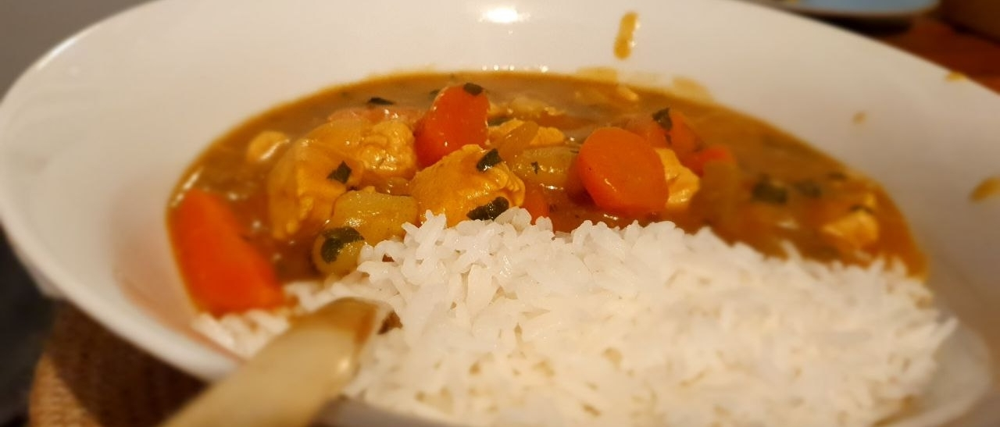

приготовление:
-
Помыть, почистить и порезать на кусочки примерно в 1см 2 палочки сельдерея, 1 среднюю луковицу. Мелко порезать 1 см имбиря и 2 зубчика чеснока. Разогреть сотейник или кастрюлю, добавить оливкового масла, обжарить все вышеперечисленное 1-2 минуты. Помыть, почистить и порезать на кусочки примерно в 1см 2 средние картофелины и 3 средних морковки. Добавить 1 ч.л кумина и 1 ч.л кориандра, обжарить еще 1-2 минуты. Добавить 650 гр куриного филе, порезанного на 1см-кусочки, обжарить 1-2 минуты. Залить 600 мл воды теплой/горячей, но не кипящей, добавить картофель, морковь, 1 ст.л кетчупа и 1 ст.л соевого соуса (2 если легкий). Перемешать, закрыть крышкой, оставить вариться на среднем огне 15 минут.
-
Промыть рис. Поставить вариться отдельно.
-
Добавить в овощи “Golden” кубиков карри — мешать, пока не растворяться и смесь не загустеет, варить, иногда помешивая, еще 15 минут.
-
Подавать карри вместе с рисом.